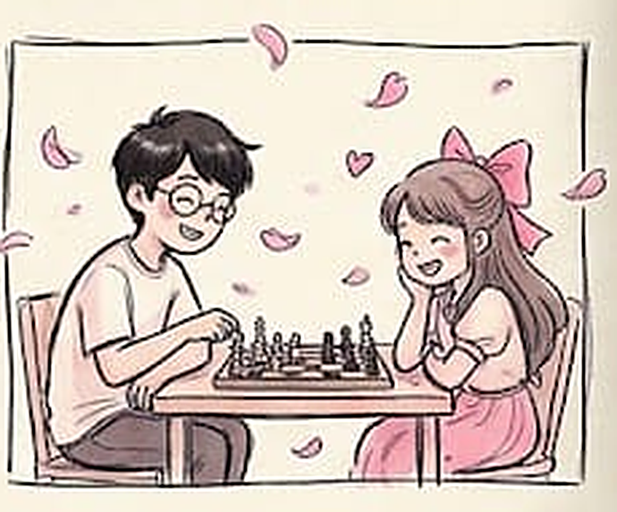
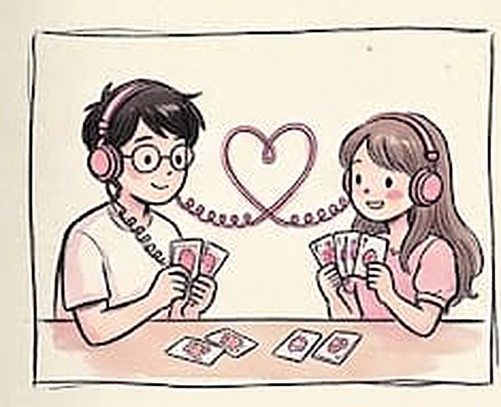
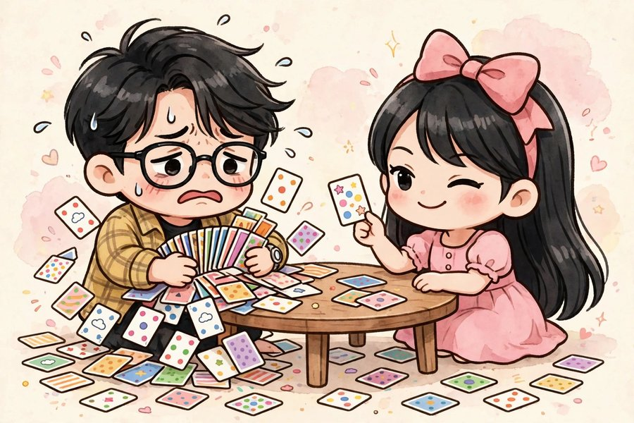
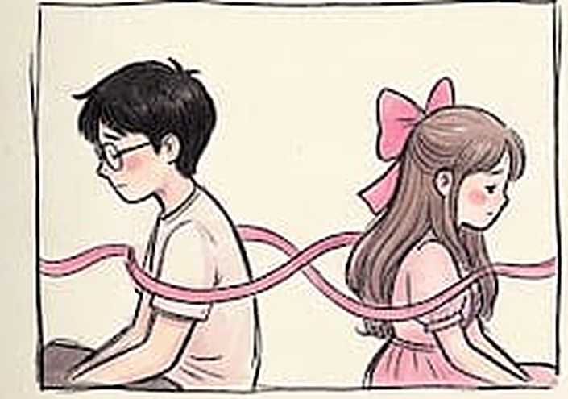
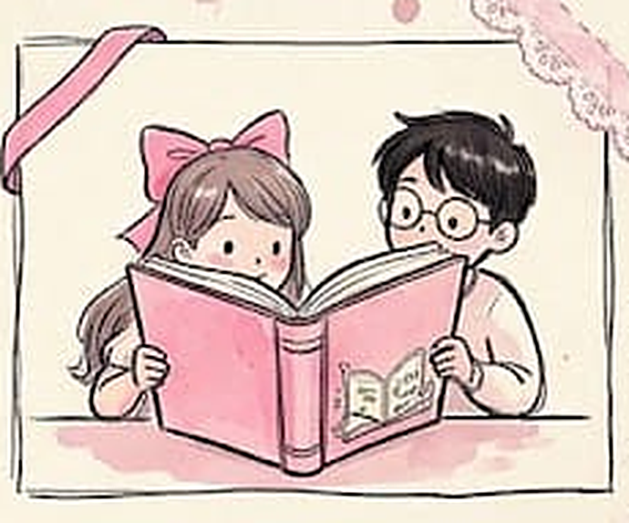
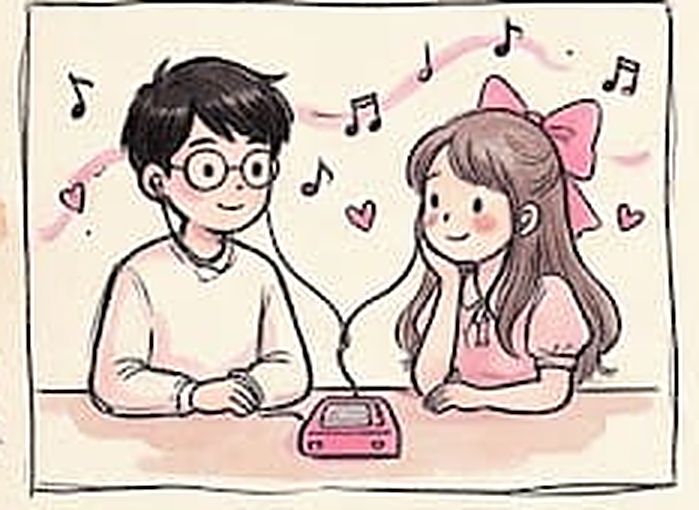

Cerita Kita, Per Lembar
Tidak semua cerita dimulai dengan cara yang megah. Cerita kita dimulai dari sebuah taruhan.


Kalah Taruhan, Menang Obrolan
Kita pertama kali benar-benar mengobrol karena kamu kalah taruhan, dan hukumannya adalah bicara denganku. Dari situ kita main catur. Kamu yang awalnya belajar, lama-lama justru melewatiku.


Uno yang Sengaja Dilama-lamain
Kita main Uno sambil teleponan berjam-jam. Jujur saja, aku sering menahan kartu terakhirku supaya teleponnya tidak cepat selesai. Kamu cerita apa saja: nilai semester, ayahmu yang santai, sampai dipanggil ibumu untuk mandi di tengah telepon.


Lembar yang Sempat Kosong
Ada masa kita membeku. Tidak ada pertengkaran besar, tidak ada perpisahan yang jelas. Kamu berhenti bercerita, dan kita hilang kontak begitu saja. Lembar ini memang kosong cukup lama, dan itu salahku. Untungnya pitanya tidak pernah benar-benar putus.

Buku yang Akhirnya Dibaca
Lewat anonymous chat, kita terhubung lagi. Aku memberimu buku yang kutulis dalam satu malam, “Sebelum Semua Teruntuk”, dan kamu membacanya. Setelah itu kita dekat lagi, bahkan kamu sempat menyamar waktu mengobrol denganku. Itu lucu sekali.

Lalu Kamu Membuat Album
Di ulang tahunku yang ke-21, kamu memberiku “Pestapora Hadirmu”: enam lagu dan puisi dengan suaramu sendiri, dua sertifikat, dan sebuah kartu. Lembar berikutnya adalah album itu, silakan diputar.